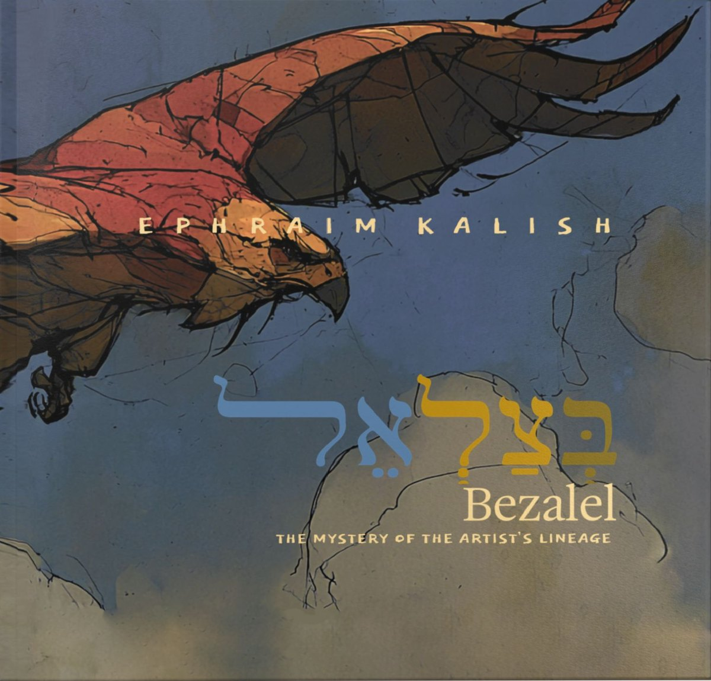

Bezalel
The Mystery of the Artist's Lineage
What the first artist in Scripture says about your calling
The Bible tells us almost nothing about Bezalel's life, yet it repeats his genealogy three times. This illustrated book by Ephraim Kalish reads those four names in the original Hebrew.
For artists and craftspeople, readers of the Bible, and anyone drawn to the nature of the creative calling.

The first artist filled with the Spirit of God
“And I have filled him with the spirit of God, in wisdom, and in understanding, and in knowledge, and in all manner of workmanship, to devise cunning works, to work in gold, and in silver, and in brass.” Exodus 31:3–4
Bezalel is the first person in Scripture whom God Himself calls filled with the Spirit of God, and the gift is given for work with the hands.
Bezalel, son of Uri, son of Hur, of Yehuda
This is how Exodus 31:2 names the artist. The book gives one chapter to each name and reads it through its Hebrew sound, its meanings and its echoes elsewhere in Scripture. The connections drawn are the author's own reading.
- BezalelIn the shadow of God
- UriMy light
- HurPurity and freedom
- YehudaPraising the Lord
Inside the book
Each chapter opens on a Hebrew verse, then the English text beside a full-page illustration created for this book. Tap a spread to read it.
Read an excerpt from each chapter
From the chapter Bezalel. In the Shadow of God
In the language of the Tanakh, the root TZLL (צלל) has several meanings: TZEL (צֵל, lit. shadow); TZALAL (צָלַל, lit. to plunge, to dive). From the same root comes METZOLAH (מְצוֹלָה, lit. the depth of the sea).
In this reading, the shadow of the Most High is no longer a flat silhouette. It becomes a depth one enters, like water, not merely shade under which one stands.
That depth is not silent. It calls forth a response: trembling. The same root, in another form, appears as TZALELU (צָלְלוּ, lit. trembled, shook at a sound) in the prophet: “my lips quivered at the voice” (Hab. 3:16). The shadow is not only a quiet refuge; it is a place where the voice reaches a person, and the whole self trembles as that voice draws near.
From the chapter Uri. Arise, Shine
The name URI (אוּרִי, lit. my light) is written with the same four letters as one of the most piercing commands in the Tanakh: KUMI ORI KI VA OREKH (קוּמִי אוֹרִי כִּי בָא אוֹרֵךְ), “Arise, shine; for thy light is come” (Isa. 60:1).
Here ORI (אוֹרִי, lit. shine) is an imperative verb. In the ancient Hebrew biblical text, where vowels were not written, the name of Bezalel’s father and this prophetic command appear as the same four letters. The name can therefore also be read as containing a command: arise, shine.
Bezalel is the answer to that imperative.
From the chapter Hur. The Path of Purity
In antiquity, producing snow-white linen was a long and labor-intensive process. First, the fabric was boiled repeatedly in an alkaline solution called NEDJRI in Egyptian, a word translated as “pure” or “divine.”
Then the fabric was washed again and again, spread out in the sun, moistened with water, and left outdoors in the light. This cycle was repeated many times, so bleaching linen took weeks, and sometimes months.
The craftsman’s task was not to make the linen white by adding color. It was to remove everything that obscured the whiteness already present in it.
יהודה
From the chapter Yehuda. The Tribe of Praise
Yehuda (יְהוּדָה) is unique in the way its letters preserve the order of the great Name. Many names in Scripture contain an element of the name of the Most High. But no other name places these four letters in exactly the same order as the unutterable Name itself, with only one letter between them: DALET (ד), the first letter of DAM (דָּם, lit. blood), here representing a human being.
The name Yehuda can therefore be read as a human being of flesh and blood immersed in the glory of God, surrounded by the name of the Most High, and empowered by the Creator.
Hardcover, 8 × 8 inches
- Hardcover$26.90
- Digital editionPDF, $6.90
- Pages24, in colour
- CoverGlossy or matte
- PrintingIn the USA, to order